Palácio
O palácio de Cnossos possuía diversos ambientes, construídos ao redor de um grande pátio central. Cada espaço tinha uma função específica, como cerimônias, armazenamento, administração e moradia.
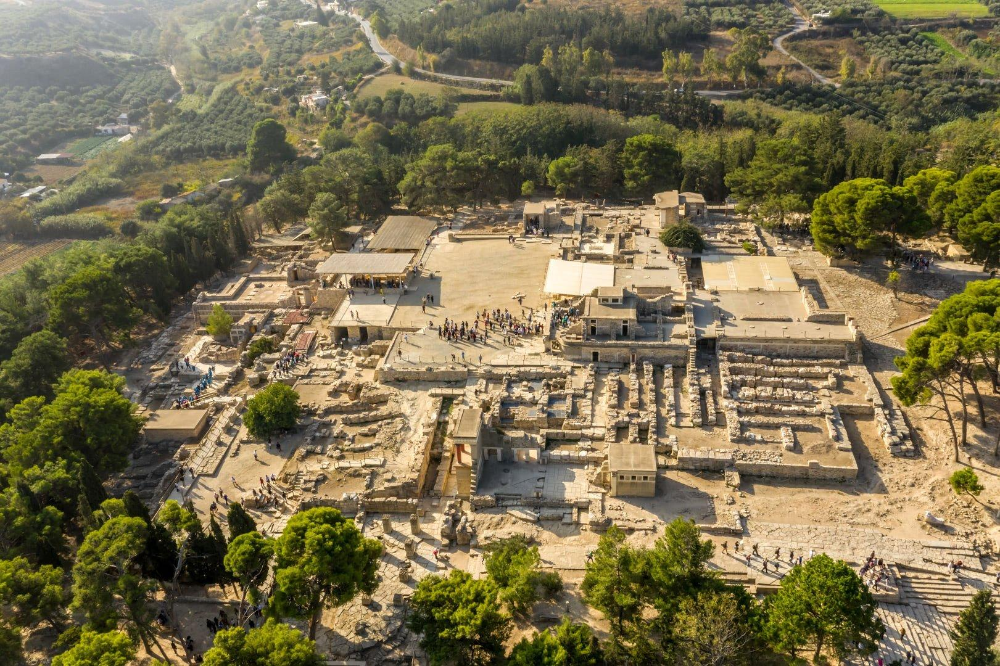
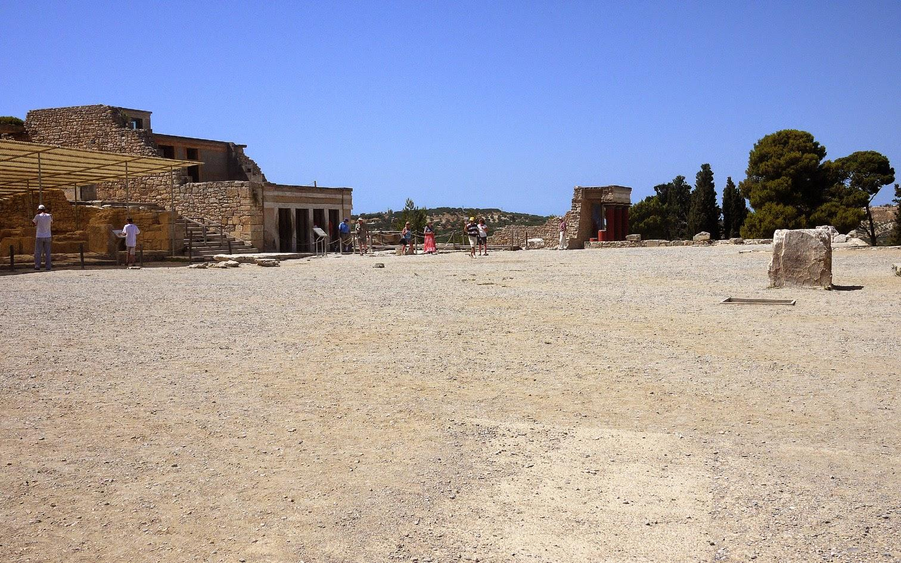
Pátio Central
Era o grande espaço aberto no centro do palácio, cercado por diferentes construções. Provavelmente era utilizado para cerimônias, reuniões e atividades coletivas. Também organizava a circulação entre as alas do complexo.
Sala do Trono
Na fotografia aparece um assento de pedra, acompanhado de bancos e pinturas de grifos nas paredes. O ambiente foi chamado de Sala do Trono pelo arqueólogo Arthur Evans. Sua função exata ainda é discutida, mas provavelmente estava relacionada a cerimônias e atividades religiosas ou administrativas.
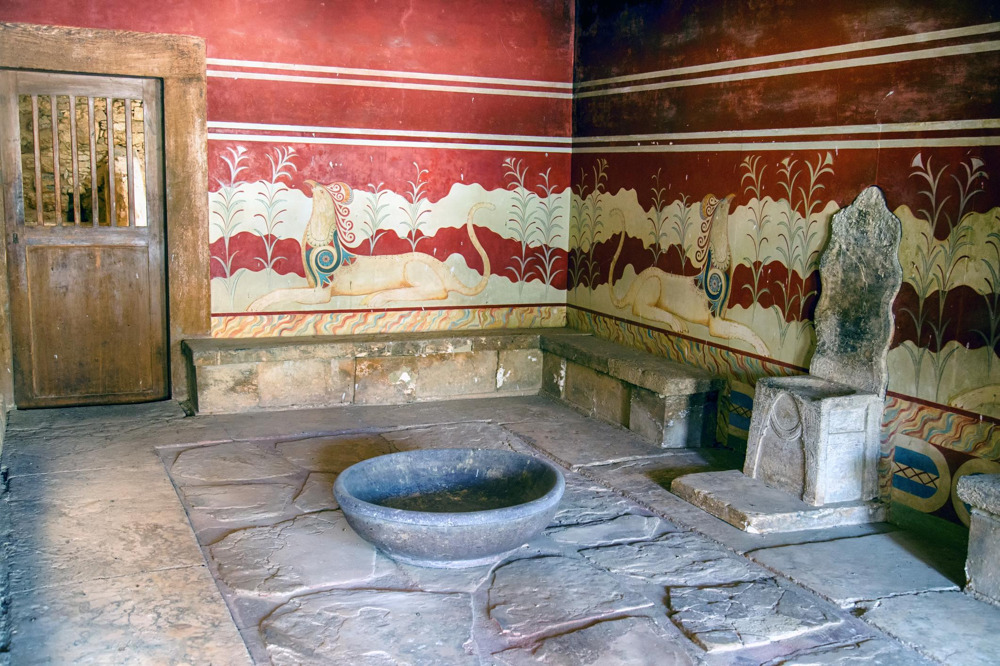
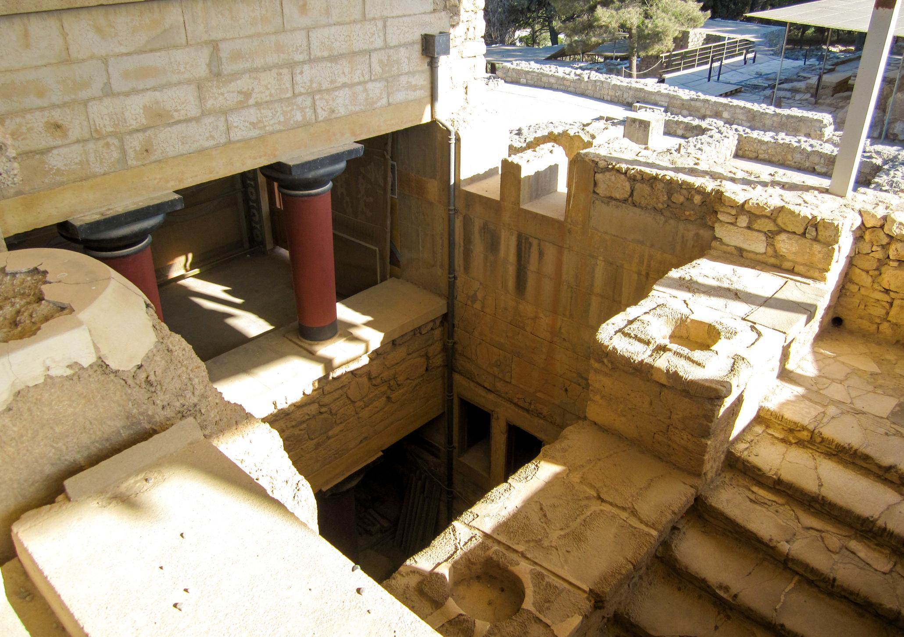
Grande Escadaria
A escadaria conectava os diferentes pavimentos do palácio, permitindo a circulação entre os ambientes. Sua construção demonstra o conhecimento arquitetônico dos minoicos, que utilizavam escadas, colunas e aberturas para organizar os espaços em diferentes níveis.
Entrada Norte
A imagem mostra uma entrada marcada por colunas vermelhas e uma representação de um touro. Essa região dava acesso ao setor norte do palácio e estava conectada a um caminho que seguia em direção ao litoral. Parte de sua aparência atual é resultado das reconstruções realizadas por Evans.
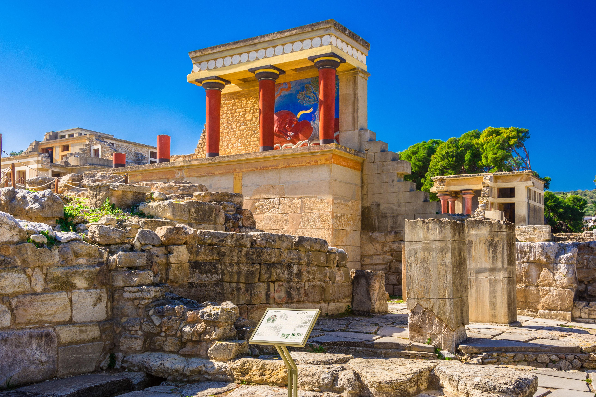
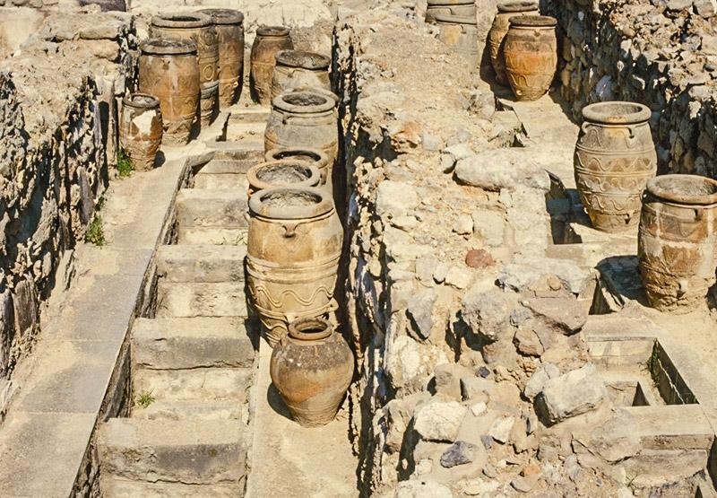
Depósitos e grandes vasos (Pitos)
Os pitos eram grandes recipientes de cerâmica utilizados para armazenar produtos como azeite, vinho e cereais. Eles ficavam principalmente nos depósitos do palácio, demonstrando a importância do armazenamento e do controle dos recursos agrícolas.
Sala da Rainha
Esse ambiente fica na ala leste do palácio e é conhecido por suas pinturas de golfinhos e elementos marinhos. A sala faz parte de um conjunto de aposentos residenciais tradicionalmente associado à realeza, embora essa identificação não seja totalmente comprovada.
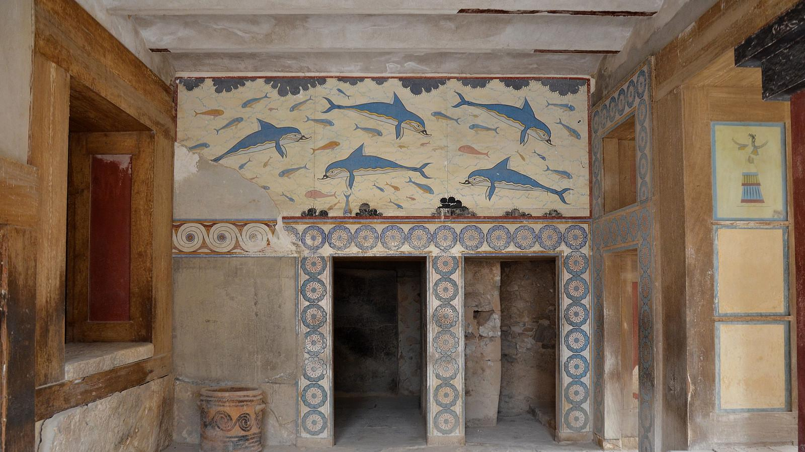
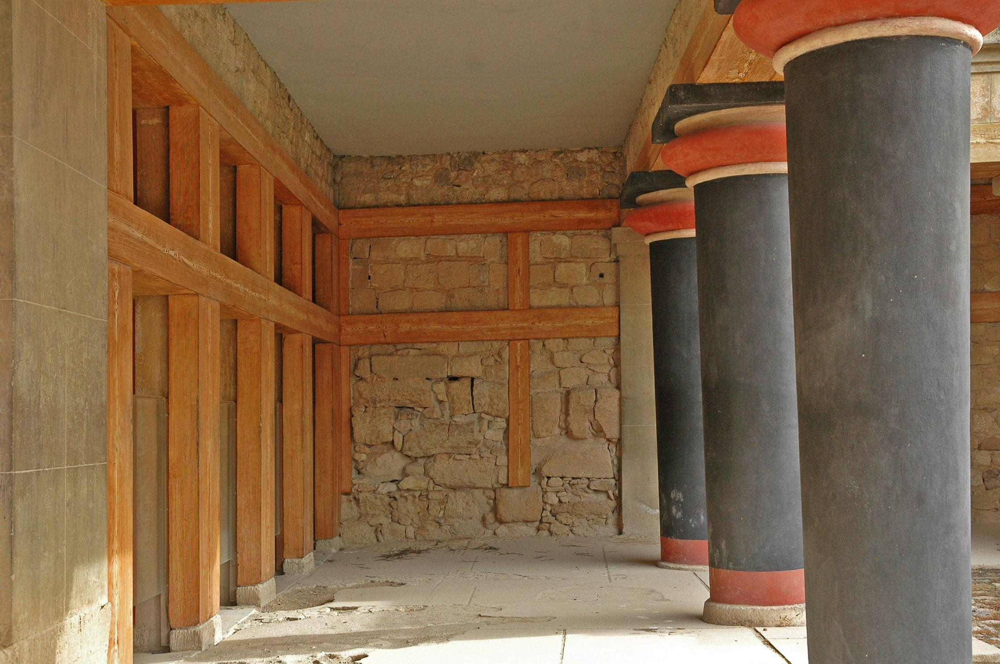
Sala dos Machados Duplos
O nome vem do símbolo do machado duplo, chamado lábris, encontrado nas paredes e associado à religião minoica. O ambiente fazia parte da ala leste do palácio, próxima aos aposentos residenciais, e pode ter tido funções cerimoniais.
Colunas Minoicas
As colunas eram geralmente feitas de madeira e apresentavam uma característica diferente das colunas gregas clássicas: eram mais largas na parte superior e estreitas na base. Muitas possuíam pintura vermelha e preta. As colunas visíveis atualmente incluem reconstruções modernas.
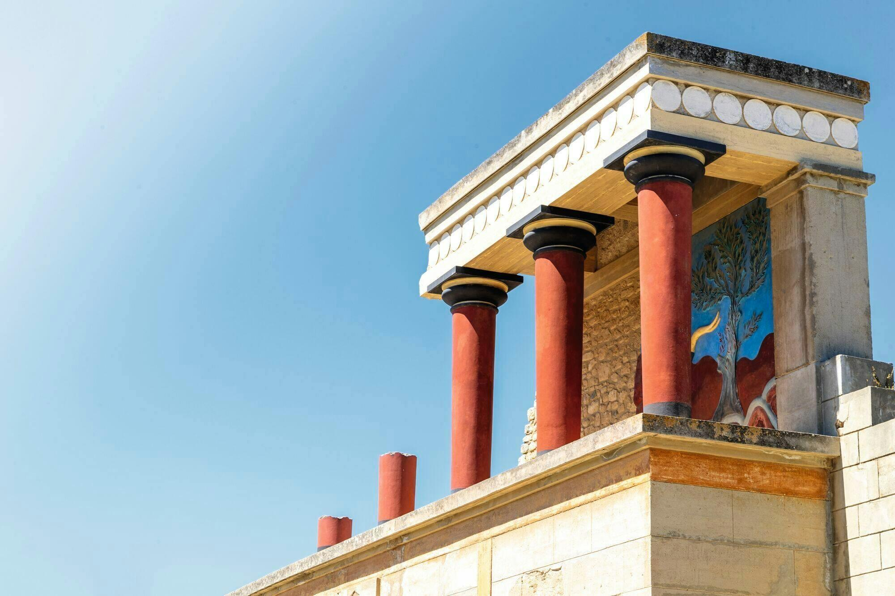
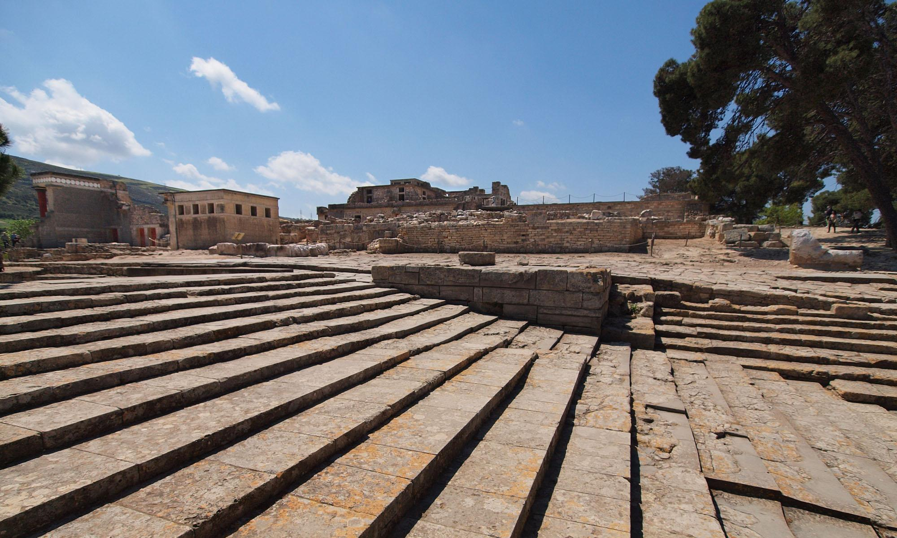
Área teatral
Era uma área aberta com degraus e espaços destinados à observação de atividades coletivas. Acredita-se que pudesse ser utilizada em cerimônias, apresentações ou reuniões. Sua função exata ainda não é totalmente conhecida.
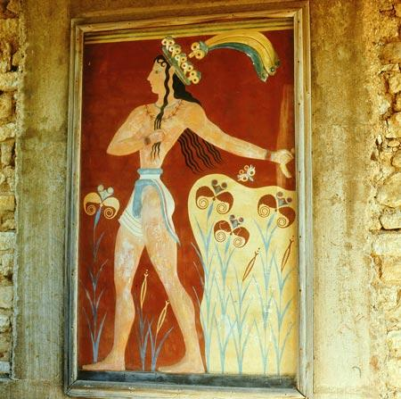
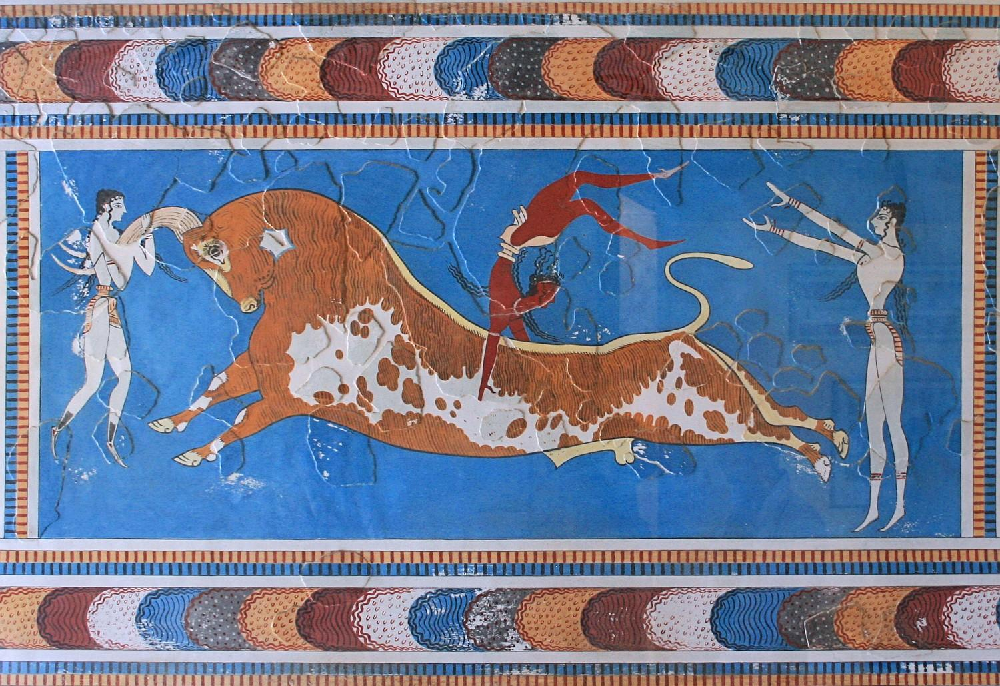
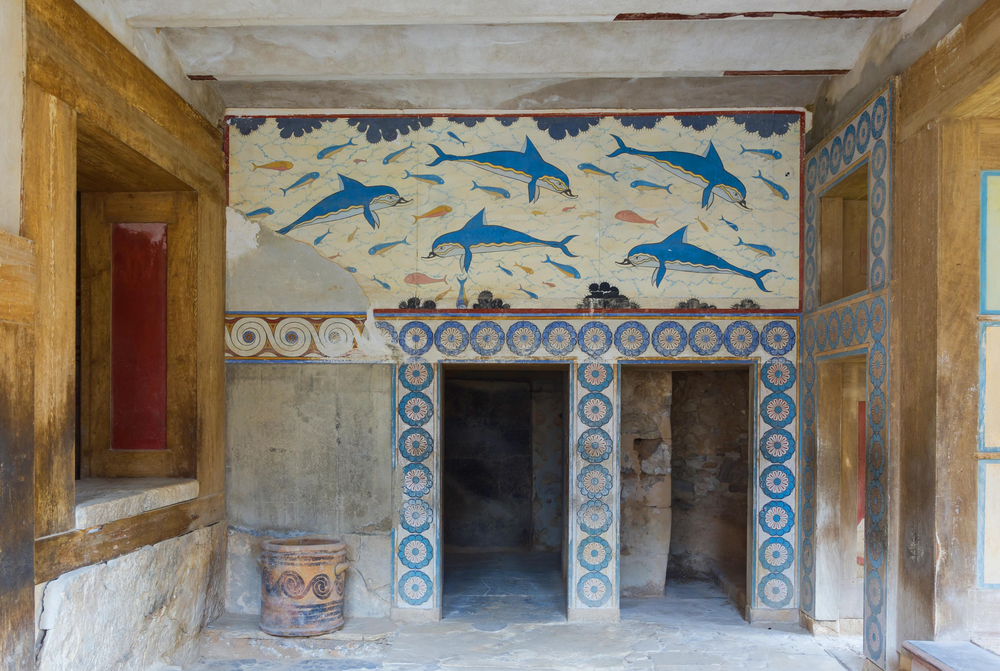
Afrescos e Pinturas
Na fotografia aparece um assento de pedra, acompanhado de bancos e pinturas de grifos nas paredes. O ambiente foi chamado de Sala do Trono pelo arqueólogo Arthur Evans. Sua função exata ainda é discutida, mas provavelmente estava relacionada a cerimônias e atividades religiosas ou administrativas.